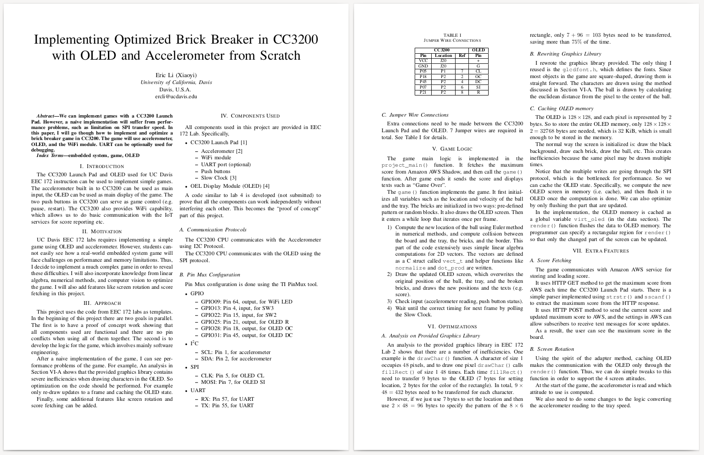
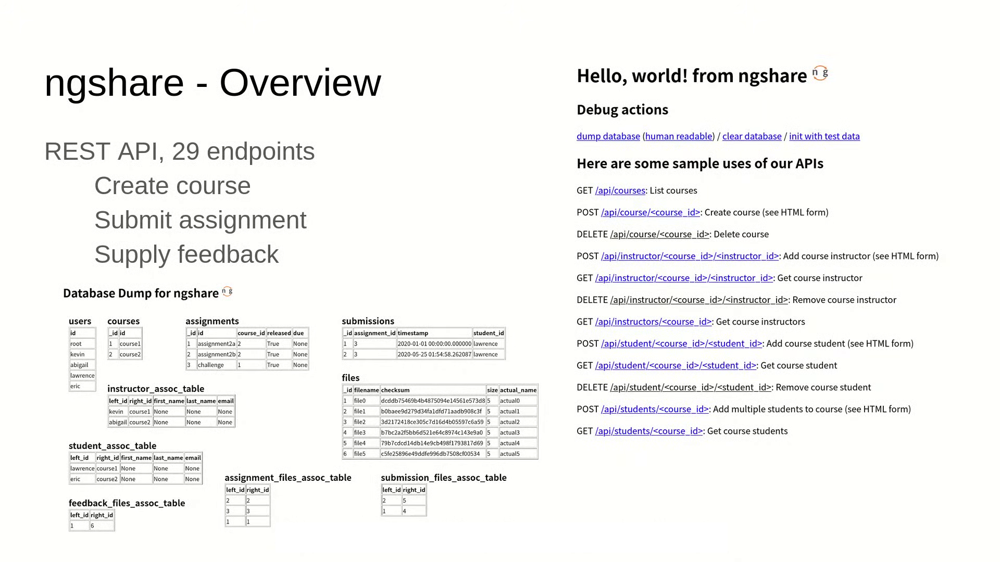
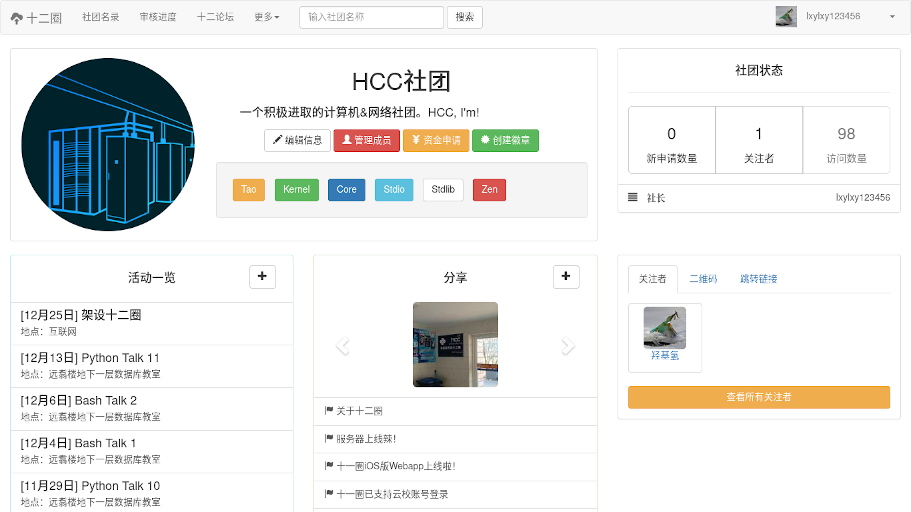
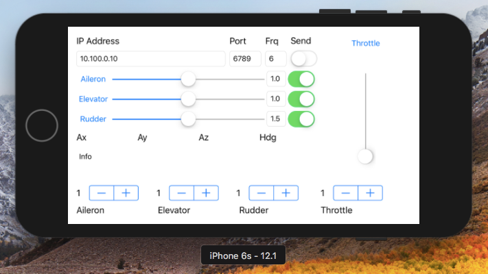
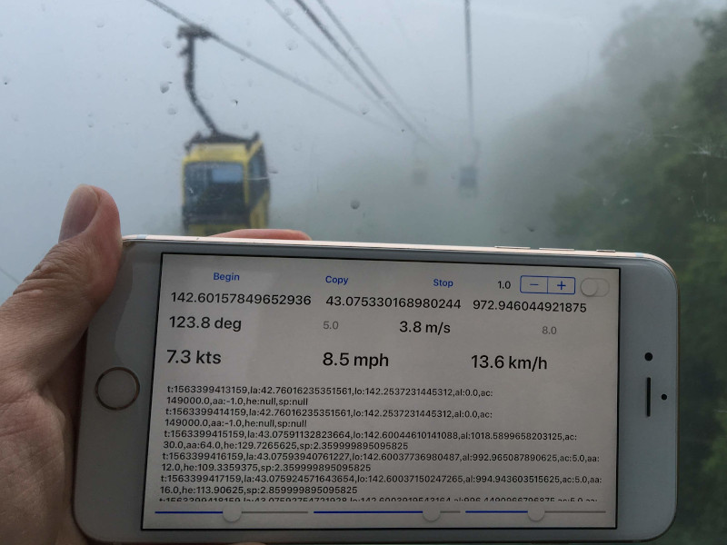
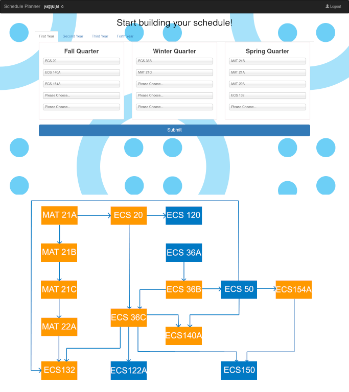
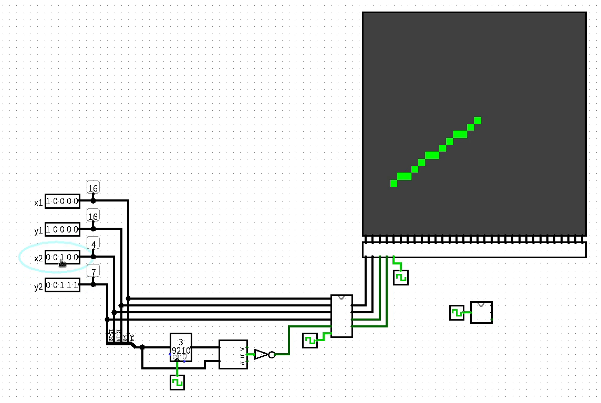
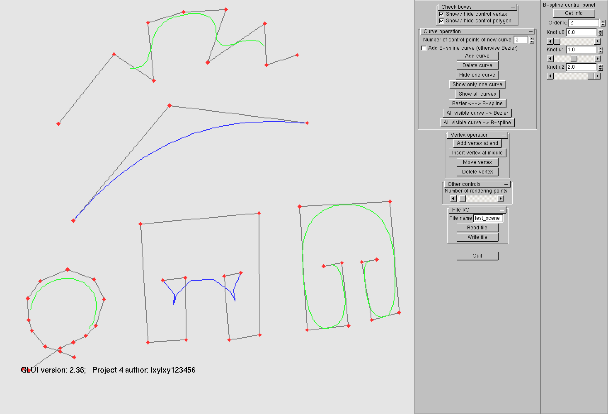

Lxylxy123456’s GitHub Projects
Table of Contents
Programs
Scripts
Websites and APPs
Tutorials and non-programs
Programs
zhalisp
A “zha” CLISP interpreter implementation
Two versions, written in C++ (3000 LOC) and Python (1300 LOC).
Features (C++): garbage collection, tail call optimization, call stack limitation
Demo:
Default options
$ cd cpp; make > /dev/null
$ ./backend
-> (+ 1 2 (* 3 4))
=> 15
-> (defun factorial (x cur)
(if (zerop x) cur (factorial (1- x) (* cur x))))
=> FACTORIAL
-> (factorial 5 1)
=> 120
-> (factorial 9999 1)
Segmentation fault (core dumped)
Enable stack limitation (make LS=1)
-> (defun factorial (x cur)
(if (zerop x) cur (factorial (1- x) (* cur x))))
=> FACTORIAL
-> (factorial 9999 1)
Error: Stack overflow
-> (exit)
Enable tail call optimization (make TR=1)
-> (defun factorial (x cur)
(if (zerop x) cur (factorial (1- x) (* cur x))))
=> FACTORIAL
-> (/ (factorial 9999 1) (factorial 9997 1))
=> 99970002
-> (* 9998 9999)
=> 99970002
->
algorithms
Personal implementation of some algorithms in “Introduction to Algorithms”, third edition
Written in C++, extensively using templates to support any data type, 20000 LOC
Contains 224 functions (e.g. LeftRotate, RightRotate, RBInsert) from 91 topics (e.g. RedBlackTree).
All algorithms have unit tests. The project uses GitHub Actions for Continuous Integration.
Demo: Red-Black Tree
$ make bin/RedBlackTreeMain
$ bin/RedBlackTreeMain
>> i
k = 1
>> i
k = 2
>> i
k = 3
>> p
2
/ \
1 3
>> i
k = 4
>> i
k = 5
>> i
k = 6
>> p
2
/ \
1 4
/ \
3 5
\
6
>>
ECS150Demo
Some demo programs related to the operating systems class (ECS 150)
sync_barrier.py: synchronization barrier implemented using semaphorespage2frame.py: Translate (virtual) page to (physical) frame using Linux’s process information pseudo-filesystem
$ sudo python3 page2frame.py | hexdump | head -n 4
gcc -o page2frame page2frame.c
Virtual memory mapping found:
['7f1b78163000-7f1b78164000', '-w-p', '00000000', '00:00', '0']
PFN: 0x16bd21
Flags: 0000000000000000000000000000000000000000000000000101100001001000
0000000 0000 0001 0002 0003 0004 0005 0006 0007
0000010 0008 0009 000a 000b 000c 000d 000e 000f
0000020 0010 0011 0012 0013 0014 0015 0016 0017
0000030 0018 0019 001a 001b 001c 001d 001e 001f
$
page_table.py: Draw the page table of a process from/proc/[pid]/maps
eec172
Brick Breaker game implemented in Python, C (XLib, Linux), and C (CC3200, Texas Instruments)
Screenshot of C version (XLib, Linux):

Demo video on CC3200:

Screenshot of final report:

ECS160HW4
A (possibly) flawless C program that calculates the top 10 tweeters (by volume of tweets) in a given CSV file of tweets. Submitted for Homework 4 of ECS 160 Fall 2019.
Contributers: Eric Li, Kevin Rong
$ cat > a.csv
id,name,content
1,lxylxy123456,I love programming
2,lxylxy123456,I like open source
3,rkevin-arch,I am a contributer of this repo
4,anonymous,blah blah blah
$ ./maxTweeter a.csv
lxylxy123456: 2
rkevin-arch: 1
anonymous: 1
$
Scripts
cariboublocker
Enhanced keringar/cariboublocker to support Gnome Shell 3.36
Download: https://extensions.gnome.org/extension/3222/block-caribou-36/
Download page screenshot:

turing-machine
Python implementation of DFA and Turing Machine
DFA Demo: test whether the input binary string represents a number divisible by 3
Specification
DFA_3mod = {
'Sigma': (0, 1),
'Q': ('A', 'B', 'C'),
'q0': 'A',
'F': ('A',),
'delta': {
('A', 0): 'A',
('A', 1): 'B',
('B', 0): 'C',
('B', 1): 'A',
('C', 0): 'B',
('C', 1): 'C',
},
}
Plot

Execution
A B C B A A B C C B A A
1 0 0 1 0 1 0 1 0 1 0
True
Turing Machine Demo: 2nd busy beaver
Specification
TM_bb2 = {
'Q': ('A', 'B', 'H'),
'Gamma': (0, 1),
'b': 0,
'Sigma': (1, ),
'q0': 'A',
'F': ('H'),
'R': (),
'delta': {
('A', 0): ('B', 1, R),
('A', 1): ('B', 1, L),
('B', 0): ('A', 1, L),
('B', 1): ('H', 1, R),
},
}
TT_bb2 = (0, )
Plot

Execution
A 0 0(0)0 0
B 0 0 1(0)0
A 0 0(1)1 0
B 0(0)1 1 0
A (0)1 1 1 0
B 1(1)1 1 0
H 1 1(1)1 0
True 6 1 1(1)1
flashplayer-update
Automatically Install the Flash plugin for Mozilla Firefox on Linux
$ ls /usr/lib64/mozilla/plugins/libflashplayer.so
ls: cannot access '/usr/lib64/mozilla/plugins/libflashplayer.so': No such file or directory
$ sudo python3 flashplayer.py
Installed
Updated version record
$ ls /usr/lib64/mozilla/plugins/libflashplayer.so
/usr/lib64/mozilla/plugins/libflashplayer.so
$ sudo python3 flashplayer.py
Installed version is latest
$
Websites and APPs
ngshare
A backend server for nbgrader’s exchange service.
Team KALE: Kevin Rong, Abigail Almanza, Lawrence Lee, Eric Li
Senior Design Project at UC Davis
Project Introduction Video:

Youtube Video Demo:

Screenshot of a few pages of ngshare (most of this project is backend, though):

shierquan
An easy event publication & management platform
Visit: 中文 / English / 日本語 (static texts only)
Django + BootStrap + PostgreSQL + Apache
Major contributers: lxylxy123456, David Ma
Chinese home page:

Chinese club info page:

English home page:

Japanese home page:

container
A file storage service
Visit: https://c.ercli.dev/ (any username / password combination will work)


chat-io
An instant messaging platform
Visit: https://ercli.dev/
(enter your name in “输入你的姓名”, click “进入对话”, then on the next page leave Session ID and Session Token blank, and click “进入对话” directly)


FGFS-Controller
An iOS app that controls a flight simulator (FGFS) on a computer.
Aileron, elevator, rudder, and throttle can be controlled.
Data are collected through accelerometer in the iOS device, and transmitted using UDP packets.

FGFSControllerWeb
A web app with similar functionality as FGFS-Controller above.
Screenshot:

Demo Video:

A new throttle control UI:

Receiver (made with pygame):

LocationTracker
An iOS APP that track the location of an iPhone
In cable car:

In high-speed rail:

In plane:

LocationTrackerWeb
A web app with similar functionality is available at: https://www.ercli.dev/ll.html or https://lxylxy123456.github.io/ll.html.
{kind=link}

hackdavis2019
Hack Davis 2019 project
Authors: lxylxy123456, Yiling Chen, jingyizhu, wyr
https://savemyschedule.ercli.dev/

lxylxy123456.github.io
My homepage (this website)
Tutorials and non-programs
HCCTalks
Some programming related tutorials in Chinese, written in XeLaTeX
Download page: https://github.com/lxylxy123456/HCCTalks/releases/latest (supports 4:3 or 16:9 aspect ratio)
Screenshot (from PythonTalk{02,11}, BashTalk02, RegExpTalk01):

cs251
ECS 251: Operating Systems presentation
Presentation Video on YouTube:

cs188
ECS 188: Ethics in an Age of Technology paper and presentation
Presentation Video on YouTube:

Screenshot of presentation slides (left) and paper (right):

bresenham-logisim
Implementation of Bresenham’s line algorithm using logisim (logic circuit)
GIF demo here.

ECS175
Computer Graphics class homework demo
Complete list of demos here
Phong lighting & Ray tracing demo:

(The green sphere is expected to be only visible in the lower-right screen)
Bezier & B-spline curve demo:

cs122b
A randomized algorithm analysis related to ECS 122B, written in LaTeX
Screenshot:

ECS132
ECS 132: Probability & Statistical Modeling for Computer Science class term project paper
Group members: Eric Li, Benjamin Bing, Zhiyuan Guo
Screenshot: